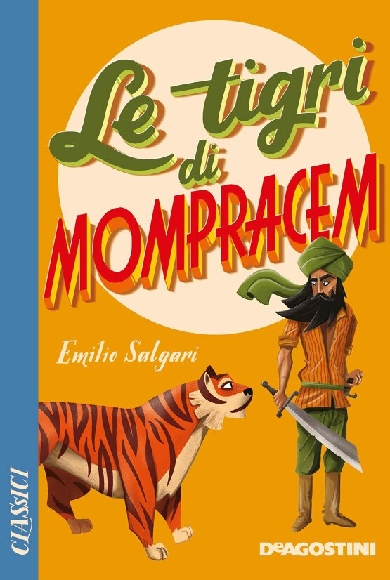
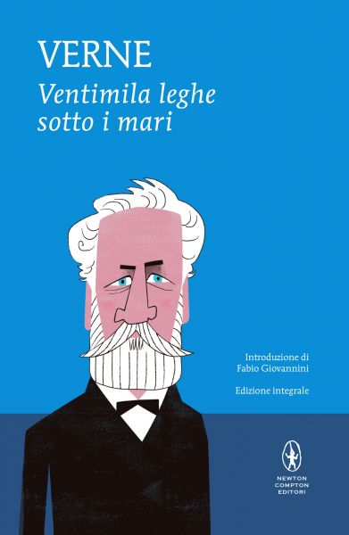
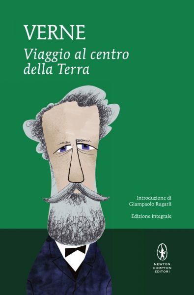
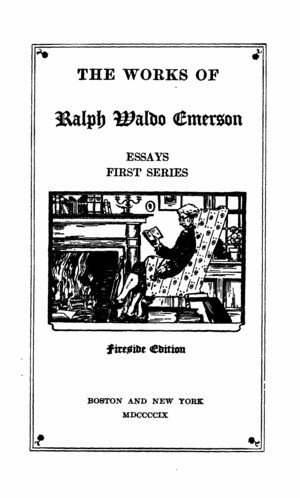
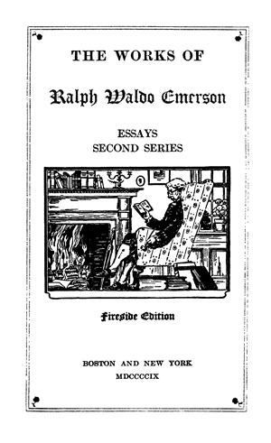
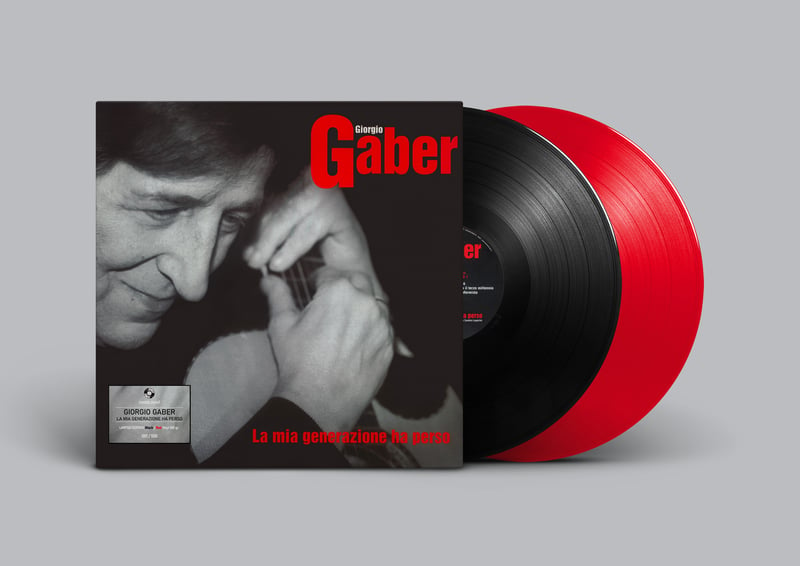

56:29 · 18 OPERE
Modernità e comunicazione: il rincorrersi di opinione e parola.
Il filo del discorso
Dr Divago parte da un paradosso: si parla continuamente di comunicazione, ma non sempre ci si domanda che cosa venga comunicato. Il percorso attraversa la stampa, il giornale, la televisione e i corsi universitari dedicati ai media. McLuhan è il punto di confronto per una domanda sul rapporto fra mezzo e contenuto. Il relatore ricorda la rapidità di alcuni libri usciti dopo l’11 settembre e il grido dello strillone: due immagini diverse della distanza che può aprirsi fra la circolazione di un messaggio e il lavoro del pensiero. La televisione conduce il discorso dalla lingua ai comportamenti. Il ruolo della RAI nella diffusione di un italiano comune è accostato a una critica della televisione commerciale e del modello di consumo. Un aneddoto sui colori degli abiti maschili introduce la moda come insieme di possibilità già selezionate. Non basta scegliere fra modelli proposti per essere autonomi, sostiene Dr Divago: si può esprimere una opinione che ripete un catalogo di opinioni disponibili. La società del contrario è richiamata nel confronto fra costruire un ragionamento e limitarsi a prendere posizione. Il criterio positivo della lettura è la capacità di lasciare una parola, una immagine o una idea nuova. Salgari e Verne esemplificano la apertura di mondi immaginativi. Dal libro il discorso passa alla educazione, alla difficoltà di interrogare i propri presupposti e al sapere aude di Kant. I vestiti nuovi dell’imperatore e Antigone rendono visibile il conflitto fra giudizio personale e consenso. Le distinzioni filosofiche sulle facoltà umane vengono usate dal relatore come metafore della maturazione intellettuale, senza costituire una ricostruzione scientifica della evoluzione della specie. Emerson offre il centro della parte finale. Intellect pone la fatica del pensare; la conferenza sui riformatori del New England mette in questione il prezzo pagato alla conformità; la massima riconoscibile in Self-Reliance difende la responsabilità di una voce propria. Bartleby serve a distinguere il rifiuto dalla ricerca attiva di un altro modo di vivere. Dr Divago teme però che anche il non conformismo possa diventare uno stile commerciale già pronto. Il ricordo incerto di una canzone mostra proprio la necessità di tornare ai testi prima di usarli come esempi. La conclusione mette a confronto opinione, scienza e disponibilità a riconoscere un errore. Il relatore richiama Galileo e la pluralità delle soluzioni nella relatività generale, poi torna ai tragici greci e alla Repubblica. La sua tesi è che una comunicazione ridotta a consenso indebolisca il giudizio. Le applicazioni alla politica e alla pandemia restano sue valutazioni; il valore del dissenso non rende automaticamente vera ogni obiezione e un consenso scientifico non è di per sé una prova di manipolazione. Anche le citazioni finali richiedono il loro contesto: Platone discute criticamente, e non fa semplicemente propria, la formula poetica sul dio che provoca la rovina di una casa.
I libri nel discorso

Gli strumenti del comunicare (Understanding Media)
Identificazione probabile
Copertina: Il Saggiatore, 2023, traduzione di Ettore Capriolo; opera originale del 1964.
Immagine autentica dell’opera, controllata visivamente; l’edizione di riferimento non è attribuita al filmato.
McLuhan e la formula del medium sono espliciti; Understanding Media è una associazione probabile, non un titolo pronunciato.
Passaggio 1:04 ↗ · Fonti e libro ↗Gli strumenti del comunicare (Understanding Media)
Identificazione probabile
Copertina: Il Saggiatore, 2023, traduzione di Ettore Capriolo; opera originale del 1964.
Immagine autentica dell’opera, controllata visivamente; l’edizione di riferimento non è attribuita al filmato.
La formula il mezzo è il messaggio ritorna; collegamento probabile al libro già catalogato.
Passaggio 6:48 ↗ · Fonti e libro ↗Il Santo
Identificazione probabile
Copertina: Immagine ufficiale Paper First del volume Il Santo, Marco Travaglio, 2023, 522 pagine, illustrazione di Riccardo Mannelli. Fotografia editoriale del volume con fronte e dorso, ritratto caricaturale e titolo rosso. Il titolo associato alla allusione del filmato rimane probabile.
Immagine autentica dell’opera, controllata visivamente; l’edizione di riferimento non è attribuita al filmato.
Travaglio è nominato nel passaggio su Berlusconi insieme alla formula santo subito. Il Santo, Paper First 2023, è un collegamento probabile; non si attribuisce a Travaglio il diverso volume omonimo di La Torre.
Passaggio 12:38 ↗ · Fonti e libro ↗
La società del contrario
Copertina: Zambon · 2005
Copertina autentica dell’edizione di riferimento, controllata visivamente. Non identifica l’esemplare letto o citato nel video.
La società del contrario è nominata dal suo autore.
Passaggio 20:13 ↗ · Fonti e libro ↗
Le tigri di Mompracem
Copertina: Copertina ufficiale De Agostini, Classici GD, cartonato del 18 maggio 2021, 464 pagine, ISBN 9788851184643. Titolo verde e rosso su fondo giallo, Sandokan e tigre illustrati. È una edizione di riferimento del romanzo, non una riscrittura moderna di altro autore.
Immagine autentica dell’opera, controllata visivamente; l’edizione di riferimento non è attribuita al filmato.
Salgari e Le tigri di Mompracem sono espliciti fra i romanzi ricordati.
Passaggio 22:13 ↗ · Fonti e libro ↗
Ventimila leghe sotto i mari
Identificazione probabile
Copertina: Copertina ufficiale Newton Compton, MiniMammut 109, edizione integrale, introduzione di Fabio Giovannini, 416 pagine, ISBN 9788854180857. Fondo azzurro e ritratto illustrato di Verne. La edizione di riferimento non è identificata come quella del relatore.
Immagine autentica dell’opera, controllata visivamente; l’edizione di riferimento non è attribuita al filmato.
Capitano Nemo e avventura sotto i mari: probabile Ventimila leghe sotto i mari, titolo completo non pronunciato.
Passaggio 22:25 ↗ · Fonti e libro ↗
Viaggio al centro della Terra
Copertina: Copertina ufficiale Newton Compton, MiniMammut 121, edizione integrale, 224 pagine, ISBN 9788854181489. Fondo verde, ritratto illustrato di Verne, introduzione di Giampaolo Rugarli. La scheda consultata non consente di attribuire una precisa impressione al filmato.
Immagine autentica dell’opera, controllata visivamente; l’edizione di riferimento non è attribuita al filmato.
Viaggio al centro della Terra è esplicito nel medesimo richiamo a Verne.
Passaggio 22:25 ↗ · Fonti e libro ↗
Risposta alla domanda: che cos’è l’Illuminismo?
Identificazione probabile
Copertina della raccolta che comprende il saggio sull’Illuminismo: Firenze University Press · Sette scritti politici liberi · 2011 · a cura di Maria Chiara Pievatolo
Copertina del volume cartaceo FUP che comprende il saggio, riscontrato dal catalogo universitario. L’ISBN appartiene alla raccolta; il filmato non annuncia un’edizione e il titolo del saggio è un’identificazione probabile della citazione.
Kant e sapere aude: probabile richiamo a Risposta alla domanda: che cos’è l’Illuminismo?, titolo non annunciato.
Passaggio 30:06 ↗ · Fonti e libro ↗
I vestiti nuovi dell’imperatore
Copertina: Rizzoli, 2014 · eBook di riferimento
Andersen e la fiaba del sovrano nudo sono espliciti.
Passaggio 31:37 ↗ · Fonti e libro ↗
Antigone
Copertina: Einaudi · Collezione di teatro · edizione di riferimento
Immagine associata all’ISBN di riferimento e controllata visivamente; edizione e traduzione non identificate come quelle citate o lette nel video.
Antigone e il primo stasimo, con il termine deinon, sono espliciti.
Passaggio 33:18 ↗ · Fonti e libro ↗
La macchina del tempo
Identificazione probabile
Copertina: Feltrinelli · Universale Economica, I classici
Wells, Eloi e Morlock identificano probabilmente La macchina del tempo, senza titolo annunciato.
Passaggio 37:06 ↗ · Fonti e libro ↗
Intellect (Intelletto), da Essays: First Series
Frontespizio di Essays: First Series · contiene Intellect: Frontespizio storico della raccolta Essays: First Series, The Works of Ralph Waldo Emerson, Fireside Edition, Boston e New York, riprodotto da Online Library of Liberty. Il catalogo OLL descrive il volume II della edizione 1909. Non è una copertina esterna né una edizione autonoma del saggio del 1841.
Immagine autentica dell’opera, controllata visivamente; l’edizione di riferimento non è attribuita al filmato.
La prima serie dei saggi e il saggio sull’intelletto sono annunciati; la domanda inglese è riscontrata in Intellect.
Passaggio 39:45 ↗ · Fonti e libro ↗
New England Reformers (I riformatori del New England)
Frontespizio di Essays: Second Series · contiene New England Reformers: Frontespizio storico della raccolta Essays: Second Series, The Works of Ralph Waldo Emerson, Fireside Edition, Boston e New York, riprodotto da Online Library of Liberty. Il catalogo OLL descrive il volume III della edizione 1909. È l’immagine della raccolta contenente il saggio, non la copertina di un volume autonomo del 1844.
Immagine autentica dell’opera, controllata visivamente; l’edizione di riferimento non è attribuita al filmato.
La frase sulla tassa distruttiva della conformità e Amory Hall 1844 identificano la conferenza New England Reformers,3 marzo 1844.
Passaggio 42:53 ↗ · Fonti e libro ↗
Bartleby lo scrivano
Copertina della raccolta: Bompiani · Bartleby lo scrivano e altri racconti · 2018
Copertina della raccolta Bompiani che contiene Bartleby lo scrivano. Non è presentata come copertina di un’edizione autonoma del racconto né come l’esemplare citato nel video.
Bartleby e la formula del rifiuto sono espliciti.
Passaggio 43:40 ↗ · Fonti e libro ↗Self-Reliance (Fiducia in se stessi), da Essays: First Series
Identificazione probabile
Frontespizio di Essays: First Series · contiene Self-Reliance: Il medesimo frontespizio di Essays: First Series usato per Intellect: immagine autentica della raccolta contenente entrambi i saggi. Fireside Edition, volume II delle Works, catalogato da Online Library of Liberty nella edizione 1909. Non è una nuova copertina autonoma né una seconda immagine inventata.
Immagine autentica dell’opera, controllata visivamente; l’edizione di riferimento non è attribuita al filmato.
La massima di Emerson sul non conformista è riconoscibile in Self-Reliance; titolo non pronunciato.
Passaggio 44:15 ↗ · Fonti e libro ↗
Il conformista
Identificazione probabile
Ristampa dell’album La mia generazione ha perso · contiene Il conformista: Fotografia promozionale ufficiale The Saifam Group della ristampa di La mia generazione ha perso: doppio vinile nero e rosso, COM 506, tiratura numerata di 500 copie. Mostra copertina con ritratto di Gaber e titolo rosso insieme ai dischi. La scaletta contiene Il conformista; non è una copertina autonoma della canzone né la edizione originale del 2001.
Immagine autentica dell’opera, controllata visivamente; l’edizione di riferimento non è attribuita al filmato.
Ricordo esitante del titolo e di un frammento, con attribuzione orale a Venditti. Riscontro probabile in Il conformista, Gaber/Luporini; il bersaglio politico suggerito non è dimostrato.
Passaggio 44:34 ↗ · Fonti e libro ↗Antigone
Copertina: Einaudi · Collezione di teatro · edizione di riferimento
Immagine associata all’ISBN di riferimento e controllata visivamente; edizione e traduzione non identificate come quelle citate o lette nel video.
Il coro di Antigone ritorna nel passaggio sul male che appare bene a chi si avvia alla rovina.
Passaggio 55:10 ↗ · Fonti e libro ↗
La Repubblica
Copertina: Laterza · La Repubblica · edizione con testo a fronte di riferimento
Immagine associata all’ISBN di riferimento e controllata visivamente; edizione e traduzione non identificate come quelle citate o lette nel video.
Politeia/Repubblica di Platone è esplicita. Il passo II380a contiene una citazione di Eschilo che Socrate non approva.
Passaggio 55:57 ↗ · Fonti e libro ↗